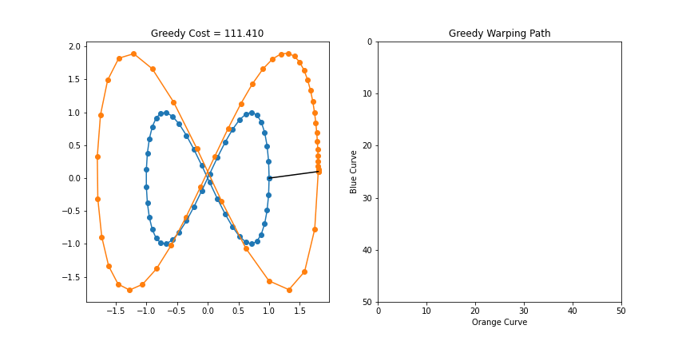
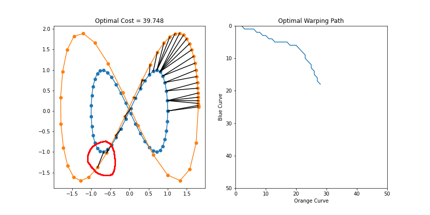

Week 7: Greedy Time Warping Pitfalls
Chris Tralie
This is a brief note on the pitfalls of using a "greedy" approach for certain discrete optimization problems. By greedy, I mean an algorithm that makes the best local choice as it's constructing a solution incrementally. Unlike dynamic programming algorithms, which find the best global solution even if some individual moves are expensive, greedy solutions just follow the best step right in front of their nose. We saw last week that a greedy solution for making change sometimes leads to a bad global solution by boxing us into some bad choices later, and a similar thing happens with greedy approaches to time warping. We will see later in the course that some greedy algorithms work, but we have to take care to prove that they yield optimal solutions. So let's first examine a counter-example to the idea that a greedy solution will work for time warping.
Below is some code to implement greedy time warping
Notice how this code is only O(M+N) instead of the O(MN) dynamic time warping algorithm with nested loops. That's great, right?! But uh oh, below is an example where this fails miserably:
Actually, it starts out OK, but it makes some good local choices in the lower left that force it into a really bad position later on. By contrast, as shown below, the optimal dynamic time warping solution takes a small hit by making a worse choice in the lower left, but it's able to keep on better track globally:
Below is the moment where the optimal dynamic programming solution takes a hit locally to lead to a much better path globally:
